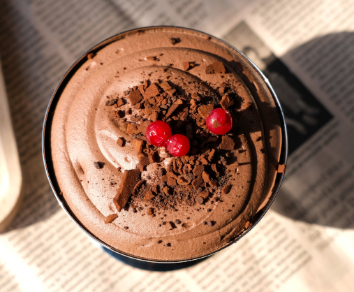

Mousse de Chocolate Tradicional
skillet 2 Doses
Fácil
chef_hat
Uma sobremesa clássica, leve e aveludada, perfeita para qualquer ocasião. Feita com chocolate negro de alta qualidade, esta receita combina a intensidade do cacau com uma textura aerada que se derrete na boca. Simples de preparar e irresistível para os amantes de chocolate.
O que precisa?

Igredientes principais
Igredientes Opcionais
Como fazer?
- Derreter o chocolate: Parte o chocolate em pedaços e derrete-o em banho-maria juntamente com a manteiga. Mexe até obteres um creme liso e homogéneo. Deixa arrefecer ligeiramente.
- Preparar as gemas: Numa taça à parte, bate as gemas com metade do açúcar até obteres um preparado claro e cremoso.
- Juntar ao chocolate: Envolve a mistura das gemas no chocolate derretido (que já não deve estar muito quente) até ficar bem integrado.
- Bater as claras em castelo: Noutra taça limpa, adiciona a pitada de sal às claras e bate em castelo firme. Quando começarem a ficar consistentes, junta o restante açúcar aos poucos, batendo mais um pouco.
- Envolver delicadamente: Adiciona um terço das claras em castelo ao preparado de chocolate e mexe bem para suavizar a massa. De seguida, envolve o restante das claras muito suavemente, de baixo para cima, para não perder o ar e manter a textura leve.
- Refrigerar: Divide a mousse por taças individuais ou coloca numa taça grande. Leva ao frigorífico durante pelo menos 4 horas antes de servir.
- Decorar e servir: Antes de servir, decora com raspas de chocolate e umas folhas de hortelã fresca.
Tempo estimado:4h 20min
Sua receita está pronta!